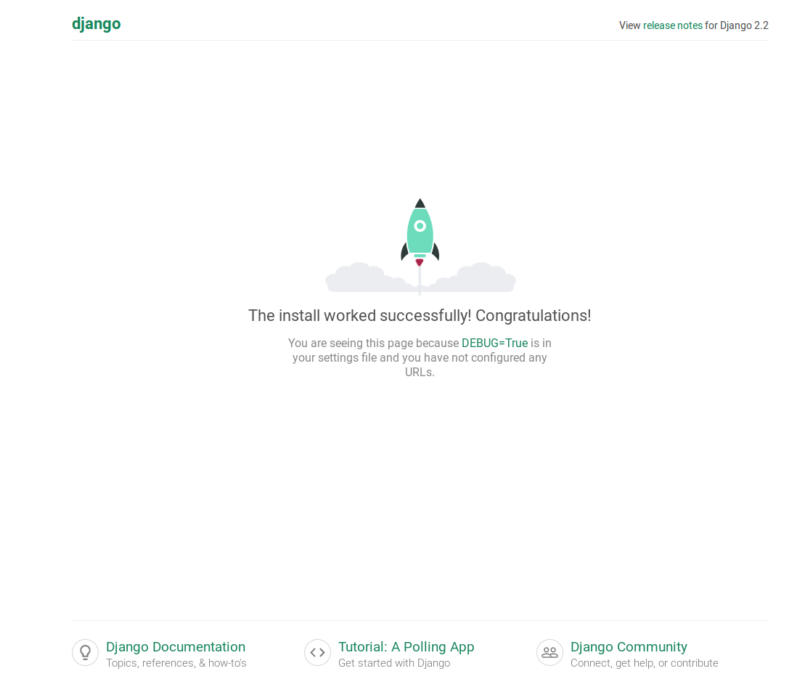

- 00 开篇词 从工程的角度深入理解Python.md.html
- 01 如何逐步突破，成为Python高手？.md.html
- 02 Jupyter Notebook为什么是现代Python的必学技术？.md.html
- 03 列表和元组，到底用哪一个？.md.html
- 04 字典、集合，你真的了解吗？.md.html
- 05 深入浅出字符串.md.html
- 06 Python “黑箱”：输入与输出.md.html
- 07 修炼基本功：条件与循环.md.html
- 08 异常处理：如何提高程序的稳定性？.md.html
- 09 不可或缺的自定义函数.md.html
- 10 简约不简单的匿名函数.md.html
- 11 面向对象（上）：从生活中的类比说起.md.html
- 12 面向对象（下）：如何实现一个搜索引擎？.md.html
- 13 搭建积木：Python 模块化.md.html
- 14 答疑（一）：列表和元组的内部实现是怎样的？.md.html
- 15 Python对象的比较、拷贝.md.html
- 16 值传递，引用传递or其他，Python里参数是如何传递的？.md.html
- 17 强大的装饰器.md.html
- 18 metaclass，是潘多拉魔盒还是阿拉丁神灯？.md.html
- 19 深入理解迭代器和生成器.md.html
- 20 揭秘 Python 协程.md.html
- 21 Python并发编程之Futures.md.html
- 22 并发编程之Asyncio.md.html
- 23 你真的懂Python GIL（全局解释器锁）吗？.md.html
- 24 带你解析 Python 垃圾回收机制.md.html
- 25 答疑（二）：GIL与多线程是什么关系呢？.md.html
- 26 活都来不及干了，还有空注意代码风格？！.md.html
- 27 学会合理分解代码，提高代码可读性.md.html
- 28 如何合理利用assert？.md.html
- 29 巧用上下文管理器和With语句精简代码.md.html
- 30 真的有必要写单元测试吗？.md.html
- 31 pdb & cProfile：调试和性能分析的法宝.md.html
- 32 答疑（三）：如何选择合适的异常处理方式？.md.html
- 33 带你初探量化世界.md.html
- 34 RESTful & Socket：搭建交易执行层核心.md.html
- 35 RESTful & Socket：行情数据对接和抓取.md.html
- 36 Pandas & Numpy：策略与回测系统.md.html
- 37 Kafka & ZMQ：自动化交易流水线.md.html
- 38 MySQL：日志和数据存储系统.md.html
- 39 Django：搭建监控平台.md.html
- 40 总结：Python中的数据结构与算法全景.md.html
- 41 硅谷一线互联网公司的工作体验.md.html
- 42 细数技术研发的注意事项.md.html
- 43 Q&A：聊一聊职业发展和选择.md.html
- 加餐 带你上手SWIG：一份清晰好用的SWIG编程实践指南.md.html
- 结束语 技术之外的几点成长建议.md.html
- 捐赠
39 Django：搭建监控平台
你好，我是景霄。
通过前几节课的学习，相信你对量化交易系统已经有了一个最基本的认知，也能通过自己的代码，搭建一个简单的量化交易系统来进行盈利。
前面几节课，我们的重点在后台代码、中间件、分布式系统和设计模式上。这节课，我们重点来看前端交互。
监控和运维，是互联网工业链上非常重要的一环。监控的目的就是防患于未然。通过监控，我们能够及时了解到企业网络的运行状态。一旦出现安全隐患，你就可以及时预警，或者是以其他方式通知运维人员，让运维监控人员有时间处理和解决隐患，避免影响业务系统的正常使用，将一切问题的根源扼杀在摇篮当中。
在硅谷互联网大公司中，监控和运维被称为 SRE，是公司正常运行中非常重要的一环。作为 billion 级别的 Facebook，内部自然也有着大大小小、各种各样的监控系统和运维工具，有的对标业务数据，有的对标服务器的健康状态，有的则是面向数据库和微服务的控制信息。
不过，万变不离其宗，运维工作最重要的就是维护系统的稳定性。除了熟悉运用各种提高运维效率的工具来辅助工作外，云资源费用管理、安全管理、监控等，都需要耗费不少精力和时间。运维监控不是一朝一夕得来的，而是随着业务发展的过程中同步和发展的。
作为量化实践内容的最后一节，今天我们就使用 Django 这个 Web 框架，来搭建一个简单的量化监控平台。
Django 简介和安装
Django 是用 Python 开发的一个免费开源的 Web 框架，可以用来快速搭建优雅的高性能网站。它采用的是“MVC”的框架模式，即模型 M、视图 V 和控制器 C。
Django 最大的特色，在于将网页和数据库中复杂的关系，转化为 Python 中对应的简单关系。它的设计目的，是使常见的Web开发任务变得快速而简单。Django是开源的，不是商业项目或者科研项目，并且集中力量解决Web开发中遇到的一系列问题。所以，Django 每天都会在现有的基础上进步，以适应不断更迭的开发需求。这样既节省了开发时间，也提高了后期维护的效率。
说了这么多，接下来，我们通过上手使用进一步来了解。先来看一下，如何安装和使用 Django。你可以先按照下面代码块的内容来操作，安装Django ：
pip3 install Django
django-admin --version
########## 输出 ##########
2.2.3
接着，我们来创建一个新的 Django 项目：
django-admin startproject TradingMonitor
cd TradingMonitor/
python3 manage.py migrate
########## 输出 ##########
Applying contenttypes.0001_initial... OK
Applying auth.0001_initial... OK
Applying admin.0001_initial... OK
Applying admin.0002_logentry_remove_auto_add... OK
Applying admin.0003_logentry_add_action_flag_choices... OK
Applying contenttypes.0002_remove_content_type_name... OK
Applying auth.0002_alter_permission_name_max_length... OK
Applying auth.0003_alter_user_email_max_length... OK
Applying auth.0004_alter_user_username_opts... OK
Applying auth.0005_alter_user_last_login_null... OK
Applying auth.0006_require_contenttypes_0002... OK
Applying auth.0007_alter_validators_add_error_messages... OK
Applying auth.0008_alter_user_username_max_length... OK
Applying auth.0009_alter_user_last_name_max_length... OK
Applying auth.0010_alter_group_name_max_length... OK
Applying auth.0011_update_proxy_permissions... OK
Applying sessions.0001_initial... OK
这时，你能看到文件系统大概是下面这样的：
TradingMonitor/
├── TradingMonitor
│ ├── __init__.py
│ ├── settings.py
│ ├── urls.py
│ └── wsgi.py
├── db.sqlite3
└── manage.py
我简单解释一下它的意思：
- TradingMonitor/TradingMonitor，表示项目最初的 Python 包；
- TradingMonitor/init.py，表示一个空文件，声明所在目录的包为一个 Python 包；
- TradingMonitor/settings.py，管理项目的配置信息；
- TradingMonitor/urls.py，声明请求 URL 的映射关系；
- TradingMonitor/wsgi.py，表示Python 程序和 Web 服务器的通信协议；
- manage.py，表示一个命令行工具，用来和 Django 项目进行交互；
- Db.sqlite3，表示默认的数据库，可以在设置中替换成其他数据库。
另外，你可能注意到了上述命令中的python3 manage.py migrate，这个命令表示创建或更新数据库模式。每当 model 源代码被改变后，如果我们要将其应用到数据库上，就需要执行一次这个命令。
接下来，我们为这个系统添加管理员账户：
python3 manage.py createsuperuser
########## 输出 ##########
Username (leave blank to use 'ubuntu'): admin
Email address:
Password:
Password (again):
Superuser created successfully.
然后，我们来启动 Django 的 debugging 模式：
python3 manage.py runserver
最后，打开浏览器输入：http://127.0.0.1:8000。如果你能看到下面这个画面，就说明 Django 已经部署成功了。

Django 的安装是不是非常简单呢？这其实也是 Python 一贯的理念，简洁，并简化入门的门槛。
OK，现在我们再定位到 http://127.0.0.1:8000/admin，你会看到 Django 的后台管理网页，这里我就不过多介绍了。
 -
-

到此，Django 就已经成功安装，并且正常启动啦。
MVC 架构
刚刚我说过，MVC 架构是 Django 设计模式的精髓。接下来，我们就来具体看一下这个架构，并通过 Django 动手搭建一个服务端。
设计模型 Model
在之前的日志和存储系统这节课中，我介绍过 peewee 这个库，它能避开通过繁琐的 SQL 语句来操作 MySQL，直接使用 Python 的 class 来进行转换。事实上，这也是 Django 采取的方式。
Django 无需数据库就可以使用，它通过对象关系映射器（object-relational mapping），仅使用Python代码就可以描述数据结构。
我们先来看下面这段 Model 代码：
# TradingMonitor/models.py
from django.db import models
class Position(models.Model):
asset = models.CharField(max_length=10)
timestamp = models.DateTimeField()
amount = models.DecimalField(max_digits=10, decimal_places=3)
models.py 文件主要用一个 Python 类来描述数据表，称为模型 。运用这个类，你可以通过简单的 Python 代码来创建、检索、更新、删除数据库中的记录，而不用写一条又一条的SQL语句，这也是我们之前所说的避免通过 SQL 操作数据库。
在这里，我们创建了一个 Position 模型，用来表示我们的交易仓位信息。其中，
- asset 表示当前持有资产的代码，例如 btc；
- timestamp 表示时间戳；
- amount 则表示时间戳时刻的持仓信息。
设计视图 Views
在模型被定义之后，我们便可以在视图中引用模型了。通常，视图会根据参数检索数据，加载一个模板，并使用检索到的数据呈现模板。
设计视图，则是我们用来实现业务逻辑的地方。我们来看 render_positions 这个代码，它接受 request 和 asset 两个参数，我们先不用管 request。这里的 asset 表示指定一个资产名称，例如 btc，然后这个函数返回一个渲染页面。
# TradingMonitor/views.py
from django.shortcuts import render
from .models import Position
def render_positions(request, asset):
positions = Position.objects.filter(asset = asset)
context = {'asset': asset, 'positions': positions}
return render(request, 'positions.html', context)
不过，这个函数具体是怎么工作的呢？我们一行行来看。
positions = Position.objects.filter(asset = asset)，这行代码向数据库中执行一个查询操作，其中， filter 表示筛选，意思是从数据库中选出所有我们需要的 asset 的信息。不过，这里我只是为你举例做示范；真正做监控的时候，我们一般会更有针对性地从数据库中筛选读取信息，而不是一口气读取出所有的信息。
context = {'asset': asset, 'positions': positions}，这行代码没什么好说的，封装一个字典。至于这个字典的用处，下面的内容中可以体现。
return render(request, 'positions.html', context)，最后这行代码返回一个页面。这里我们采用的模板设计，这也是 Django 非常推荐的开发方式，也就是让模板和数据分离，这样，数据只需要向其中填充即可。
最后的模板文件是 position.html，你应该注意到了， context 作为变量传给了模板，下面我们就来看一下设计模板的内容。
设计模板Templates
模板文件，其实就是 HTML 文件和部分代码的综合。你可以想象成，这个HTML 在最终送给用户之前，需要被我们预先处理一下，而预先处理的方式就是找到对应的地方进行替换。
我们来看下面这段示例代码：
# TradingMonitor/templates/positions.html
<!DOCTYPE html>
<html lang="en-US">
<head>
<title>Positions for {{asset}}</title>
</head>
<body>
<h1>Positions for {{asset}}</h1>
<table>
<tr>
<th>Time</th>
<th>Amount</th>
</tr>
{% for position in positions %}
<tr>
<th>{{position.timestamp}}</th>
<th>{{position.amount}}</th>
</tr>
{% endfor %}
</table>
</body>
我重点说一下几个地方。首先是<title>Positions for {{asset}}</title>，这里双大括号括住 asset 这个变量，这个变量对应的正是前面 context 字典中的 asset key。Django 的渲染引擎会将 asset ，替换成 context 中 asset 对应的内容，此处是替换成了 btc。
再来看{% for position in positions %}，这是个很关键的地方。我们需要处理一个列表的情况，用 for 对 positions 进行迭代就行了。这里的 positions ，同样对应的是 context 中的 positions。
末尾的{% endfor %}，自然就表示结束了。这样，我们就将数据封装到了一个列表之中。
设计链接 Urls
最后，我们需要为我们的操作提供 URL 接口，具体操作我放在了下面的代码中，内容比较简单，我就不详细展开讲解了。
# TradingMonitor/urls.py
from django.contrib import admin
from django.urls import path
from . import views
urlpatterns = [
path('admin/', admin.site.urls),
path('positions/<str:asset>', views.render_positions),
]
到这里，我们就可以通过 http://127.0.0.1:8000/positions/btc 来访问啦！
测试
当然，除了主要流程外，我还需要强调几个很简单但非常关键的细节，不然，我们这些改变就不能被真正地应用。
第一步，在 TradingMonitor/TradingMonitor 下，新建一个文件夹 migrations；并在这个文件夹中，新建一个空文件 __init__.py。
mkdir TradingMonitor/migrations
touch TradingMonitor/migrations/__init__.py
此时，你的目录结构应该长成下面这样：
TradingMonitor/
├── TradingMonitor
│ ├── migrations
│ └── __init__.py
│ ├── templates
│ └── positions.html
│ ├── __init__.py
│ ├── settings.py
│ ├── urls.py
│ ├── models.py
│ ├── views.py
│ └── wsgi.py
├── db.sqlite3
└── manage.py
第二步，修改 TradingMonitor/settings.py：
INSTALLED_APPS = [
'django.contrib.admin',
'django.contrib.auth',
'django.contrib.contenttypes',
'django.contrib.sessions',
'django.contrib.messages',
'django.contrib.staticfiles',
'TradingMonitor', # 这里把我们的 app 加上
]
TEMPLATES = [
{
'BACKEND': 'django.template.backends.django.DjangoTemplates',
'DIRS': [os.path.join(BASE_DIR, 'TradingMonitor/templates')], # 这里把 templates 的目录加上
'APP_DIRS': True,
'OPTIONS': {
'context_processors': [
'django.template.context_processors.debug',
'django.template.context_processors.request',
'django.contrib.auth.context_processors.auth',
'django.contrib.messages.context_processors.messages',
],
},
},
]
第三步，运行 python manage.py makemigrations：
python manage.py makemigrations
########## 输出 ##########
Migrations for 'TradingMonitor':
TradingMonitor/migrations/0001_initial.py
- Create model Position
第四步，运行 python manage.py migrate：
python manage.py migrate
########## 输出 ##########
Operations to perform:
Apply all migrations: TradingMonitor, admin, auth, contenttypes, sessions
Running migrations:
Applying TradingMonitor.0001_initial... OK
这几步的具体操作，我都用代码和注释表示了出来，你完全可以同步进行操作。操作完成后，现在，我们的数据结构就已经被成功同步到数据库中了。
最后，输入 python manage.py runserver，然后打开浏览器输入http://127.0.0.1:8000/positions/btc，你就能看到效果啦。-
现在，我们再回过头来看一下 MVC 模式，通过我画的这张图，你可以看到，M、V、C这三者，以一种插件似的、松耦合的方式连接在一起：
当然，我带你写的只是一个简单的 Django 应用程序，对于真正的量化平台监控系统而言，这还只是一个简单的开始。
除此之外，对于监控系统来说，其实还有着非常多的开源插件可以使用。有一些界面非常酷炫，有一些可以做到很高的稳定性和易用性，它们很多都可以结合 Django 做出很好的效果来。比较典型的有：
- Graphite 是一款存储时间序列数据，并通过 Django Web 应用程序在图形中显示的插件；
- Vimeo 则是一个基于 Graphite 的仪表板，具有附加功能和平滑的设计；
- Scout 监控 Django和Flask应用程序的性能，提供自动检测视图、SQL查询、模板等。
总结
这一节课的内容更靠近上游应用层，我们以 Django 这个 Python 后端为例，讲解了搭建一个服务端的过程。你应该发现了，使用 RESTful Framework 搭建服务器，是一个如此简单的过程，你可以去开一个自己的交易所了（笑）。相比起具体的技术，今天我所讲的 MVC 框架和 Django 的思想，更值得你去深入学习和领会。
思考题
今天我想给你留一个难度比较高的作业。RESTful API 在 Django 中是如何实现安全认证的？你能通过搜索和自学掌握这个知识点吗？希望可以在留言区看到你的认真学习记录和总结，我会一一给出建议。也欢迎你把这篇文章分享给你的朋友、同事，一起交流、一起进步。
© 2019 - 2023 Liangliang Lee. Powered by gin and hexo-theme-book.